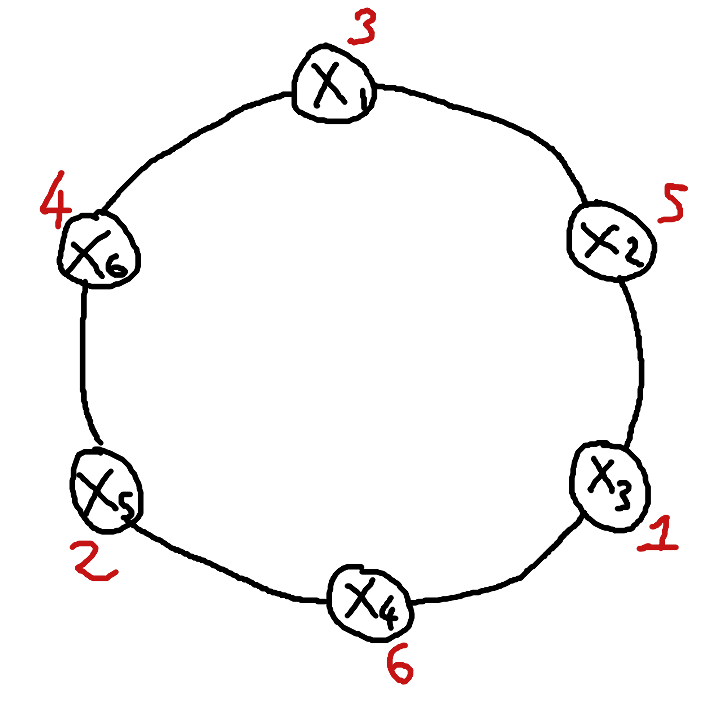

ADRC - Lesson 08
Indice
1 Leader Election
In un sistema distribuito in molti casi si necessita che una singola entità coordini il lavoro delle altre
entità per la risoluzione di task.
La presenza di tale entità può essere necessaria per semplificare lo svoglimento di un task oppure
perché è richiesto per la natura stessa del problema.
Il problema della scelta di un leader tra un insieme omogeneo e simmetrico di individui di una popolazione
è noto come il Leader Election Problem.
Generalmente il problema richiede di portare la rete da una configurazione iniziale in cui tutti i nodi
sono in uno stesso stato, ad una configurazione in cui tutti i nodi saranno in uno stato follower eccetto
uno solo che dovrà essere nello stato di leader.
Non ci sono restrizioni su quali nodi devono iniziare il task della leader election, e nemmeno su quali
nodi possono diventare leader.
Si può pensare alla leader election come un metodo che forza la restrizione di unique initiator,
infatti eletto un leader è possibile risolvere il task con protocolli a single initiator semplicemente
ponendo il leader come nodo initiator.
Consideriamo il problema sotto il seguente insieme R di restrizioni:
- BL: bidirectional links
- C: connectivity
- TR: total reliability
THM 1 Sotto le restrizioni R non è deterministicamente possibile risolvere il problema della leader election
Questo teorema forte è conseguenza della condizione di perfetta simmetria
Il fenomeno della simmetria perfetta occorre quando una rete ha una struttura totalmente simmetrica
in modo tale che ogni nodo non è in grado in nessun modo di distinguersi da un altro.
Ciò significa che se tutti i nodi sono in uno stato interno \(\sigma\) ad uno stesso istante \(t\), da quel
momento in poi essi si comporteranno esattamente alla stessa identica maniera perché avranno la stessa
visione del mondo esterno.
Non potendosi comportare in maniera differente, i nodi cambieranno stato alla stessa maniera, e quindi
non è possibile arrivare in una situazione in cui un nodo avrà uno stato diverso dagli altri (il leader).
Il problema della leader election è anche noto come simmetry breaking, perché appunto cerca di "rompere" tale simmetria tra i nodi.
Il teorema 1 ci dice però che per fare rompere la simmetria, le restrizioni R non sono sufficienti.
È necessario aggiungere la restrizione Unique Indentifier o Initial Distinct Values (in breve ID),
nella quale si assume che ogni nodo \(x\) è univocamente identificato da valore \(id(x)\), ovvero
che rispetta la seguente proprietà
\[
\forall x,y \in V \;\; id(x) \neq id(y)
\]
Notiamo che risolvere il task dell'elezione di un leader è risolvibile con con la restrizione ID:
per esempio si potrebbe eleggere come leader il nodo con etichetta minima (o massima).
2 Minimum Finding on Ring
Come accennato, trovare il nodo cone etichetta minima può essere sfruttato per l'elezione di un leader.
Consideriamo una rete ad anello, ovvero una tra le tipologie più sparse di grafo simmetrico connesso.
Un anello è un grafo \(R = (\lbrace x_1, ..., x_n \rbrace, E)\) in cui l'insieme degli archi \(E\) è definito come \[ E \equiv \lbrace \lbrace x_i, x_{i+1} \rbrace \subseteq V | i = 1,2, ..., n-1 \rbrace \cup \lbrace \lbrace x_n, x_1 \rbrace \rbrace \]
Oss.1 non è detto che gli id dei nodi siano globalmente consistenti, ovvero non è detto che
\(id(x_i) = i\), oppure che se \(id(x_i) = k\) allora per forza deve essere vero che \(id(x_{i+1}) = k+1\) e \(id(x_{i-1}) = k-1\).
Oss.2 in un anello con \(n\) nodi ci sono esattamente \(n\) archi.
Assumiamo in fine che ogni nodo condivide una stessa idea di destra e sinistra. Ovvero se definiamo che il nodo destro di \(x_2\) è \(x_3\), allora il nodo destro di ogni nodo \(x_i\) sarà il nodo con indice \(i+1 \mod{n}\)1.

Figura 1: Anello con 6 nodi. I simboli di colore rosso sono le etichette.
2.1 All-the-way protocol
Una prima idea abbastanza semplice è la seguente:
- quando un nodo si attiva e inizia il protocollo inoltra un messaggio in una direzione concorde a tutti, diciamo a destra. Nel messaggio inviato sarà scritta la propria etichetta.
- quando un nodo riceve un messaggio conserva l'etichetta scritta, tenendo traccia dell'etichetta minima ricevuta fino a quel momento.
Dopodiché inoltra in avanti il messaggio (
all-the-way). - quando un nodo riceve da sinistra un messaggio con la sua stessa etichetta allora vuol dire che avrà fatto il giro, e che tutti i nodi avranno ricevuto la sua etichetta, perciò non dovrà più inoltrarla.
La domanda che sorge ora è: quando un nodo può affermare di aver identificato l'etichetta minima dell'anello?
Affermare di aver considerato tutte le etichette quando la propria etichetta avrà fatto il giro è sbagliato. Questo perché si necessiterebbe di un'ulteriore restrizione,
la Message Orderign.
Se i messaggi seguissero una coda FIFO di trsmissione, allora certamente a un nodo \(x\) tornerebbe indietro il suo messaggio non prima di aver ricevuto gli altri \(n-1\).
Si potrebbe pensare allora di terminare il protocollo quando un nodo riceve esattemente \(n\) messaggi (compreso il suo di ritorno), però questo non è possibile
a meno che non si conosca a priori in valore di \(n\).
È però possibile ricavare \(n\) in qualche maniera. Sappiamo che se il messaggio di \(x\) torna a destinazione allora certamente sarà stato inoltrato da \(n\) nodi (compreso \(x\)). Se inseriamo un contatore nel messaggio che viene incrementato ad ogni inoltro, allora il valore del contatore quando il messaggio tornerà a destinazione sarà esattamente pari ad \(n\). Perciò quando \(x\) riceve il suo messaggio da sinistra potrà ricavare il valore di \(n\) e comportarsi in due modi:
- se \(x\) ha già ricevuto \(n\) etichette allora basta fare il minimo tra tutte per identificare l'etichetta minima dell'intera rete.
- se \(x\) ha ricevuto \(k < n\) etichette, allora dovrà attendere di ricevere altre \(n-k\) nuove etichette, per poi poter calcolare il minimo.
In questa maniera ogni nodo potrà sempre terminare localmente, riuscendo ad identificare un leader globale comune a tutti.
Vediamo qundi una possibile implementazione del protocollo appena descritto. L'insieme degli stati è
\begin{align*} S &= \lbrace \texttt{ASLEEP}, \texttt{AWAKE}, \texttt{FOLLOWER}, \texttt{LEANDER} \rbrace\\ S_{init} &= \lbrace \texttt{ASLEEP} \rbrace\\ S_{final} &= \lbrace \texttt{FOLLOWER}, \texttt{LEANDER} \rbrace\\ \end{align*}def initialize(self):
self.count = 0
self.size = 1
self.known = False
self.min = self.id
send_right({msg: "ELECTION", id: self.id, count: 1})
def check(self):
assert self.size == ring_size
self.state = "LEADER" if self.min == self.id else "FOLLOWER"
ring_size = None
if self.state == "ASLEEP":
spontaneously:
self.initialize()
self.state = "AWAKE"
receiving(msg):
self.initialize()
self.count += 1
self.min = min(self.min, msg.id)
self.state = "AWAKE"
elif self.state == "AWAKE":
receiving(msg):
if self.id == msg.id:
ring_size = msg.count
self.known = True
self.check()
elif self.id != msg.id:
send_right({msg: msg.msg, id: msg.id, count: msg.count+1})
self.count += 1
self.min = min(self.min, msg.id)
if self.known:
self.check()
2.1.1 Correttezza e complessità
È facilmente intuibile la correttezza del protocollo, in quanto l'assunzione di total reliability ci garantisce che ogni nodo prima o poi riceverà le informazioni
riguardo le etichette di tutti quanti, e ne riuscirà a calcolare il minimo.
Per quanto riguarda la message complexity basta osservare che ogni etichetta compierà l'intero giro dell'anello, per un tatole di \[ MSG(\texttt{all-the-way}) = n^2 \] Invece per la time complexity possiamo solo fare affermazioni riguardo un ideal time. Assumendo che il sistema sia sincorno, che tutti i nodi iniziano il protocollo ad uno stesso istante \(t\) e che il tempo di trasmissione è di una sola unità fissata, allora il tempo ideale è \(n\). Il caso peggiore invece è quando si attiva un solo nodo \(x_1\) al tempo \(t_0\). Inviando il messaggio al suo vicino \(x_2\), esso si attiverà al tempo \(t_1 = t_0 + 1\). Il nodo \(x_3\) si attievrà al tempo successivo, e così via fino al nodo \(x_n\) che si attiverà dopo \(n-1\) istanti. Da quel momento in poi, l'ultimo nodo che terminerà il processo sarà proprio \(x_n\), il quale dovrà aspettare che la sua etichetta faccia il giro completo dell'anello, risultando così in una time complexity di \[ time(\texttt{all-the-way}) \leq 2n -1 \]
Infine è possibile calcolare una bit complexity del protocollo all-the-way.
Trascurando la stringa "ELECTION" che può anche essere omessa, è sufficiente contare il numero di bit necessari per rappresentare l'etichetta \(id(x)\) e il contatore.
Considerando il messaggio id + count (dove l'operatore + sta per la concatenazione dei due valori), il numero massimo di bit necessari per rappresentare
un messaggio se lo si codifica in binario sarà \(\log_2{(id(x) + n)}\), con una complessità globalde di \(\Theta(n^2\log{(id(x) + n)})\).
2.2 As Far (as it can) protocol
[da finire]
Note a piè di pagina:
il modulo è necessario perché il nodo a destra di \(x_n\) non può essere \(x_{n+1}\) in quanto non esiste, ma deve essere \(x_1\).